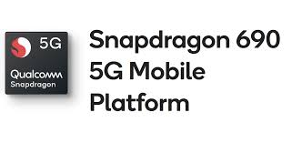
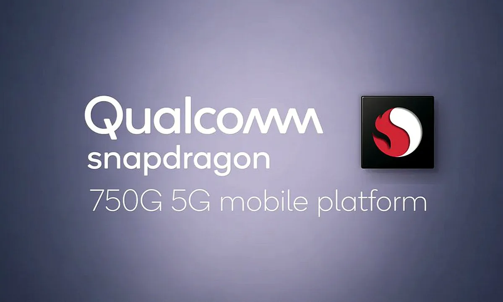

Comparing Snapdragon 765G vs Snapdragon 690 5G and Snapdragon 750G 5G
Posted by Aditya Ramakrishnan on October 12, 2020Snapdragon 765G

Snapdragon 765G is an upper midrange SoC launched by Qualcomm in the June of 2019. It has Octa (eight) cores which is divided into two clusters. The eight cores are divided into two high performance Cortex A76 clocked at 2.3 Ghz (Prime Core) and 2.2 Ghz (Gold Core) and the remaining 6 cores are power efficient based on Cortex-A55 with a clock speed of 1.8 Ghz
This 765G acts as an successor to 730G and it is one of the first 7xx series of chipset to support 5G bandwidth.This SoC has an inbuilt Snapdragon X52 modem which supports speeds of up to 3.7 / 1.6 Mbps (down- and upload) and mmWave and Sub-6.
On coming to the performance this processor's CPU performance can be compared with 730G however the single core performance is much better thanks to the highly clocked primary core.
In terms of GPU performance it has integrated Adreno 620 which is also found in Snapdragon 768G however here the GPU is underclocked here thus missing some Snapdragon Elite Gaming features.
The Snapdragon 765G is built on the 7nm fabrication process, ensuring best-in-class power efficiency and supports Bluetooth 5.0, Wi-Fi 6 and aptX Adaptive audio.
As expected, the Snapdragon 865 packs in Qualcomm’s latest and greatest features that you won’t find on 700 series chips. However, the Snapdragon 765 pinches a number of the key ones, including 5G capabilities, Wi-Fi 6, computer vision image processing, support for 120Hz (Only in Snapdragon 765G) displays, and Quick Charge 4+ compatibility. When it comes to covering the core high-end smartphone features, the 76 has us covered.
The Snapdragon 765G is a sensible component to pick for devices, such as the OnePlus Nord and Vivo X50 & X50 Pro, that are looking to undercut today’s expensive flagships. Great smartphones start with the SoC, but they certainly don’t end with it. Ultimately it depends on what manufacturers do with their software features, camera hardware, other design aspects.
The Snapdragon 765G certainly isn’t a replacement for the very best tech on the market. But it is a comprehensive, affordable chip that supports most of the latest high-end trends.
Snapdragon 690 5G
Qualcomm has recently announced a new SoC in the 6xx series called as Snapdragon 690 5G. As the name suggest this SoC supports 5G bandwidth and has integrated X51 5G Modem-RF System.
This processor is considered as an successor to the Snapdragon 675 SoC and has eight cores with Kryo 560 CPU.The CPU Architecture is 64-bit and the processor is made up of 8nm process technology. The processor has 2x Kyro 560 Gold cores clocked at 2.0GHz and 6x Kryo 560 Silver cores with a clock speed of 1.7GHz. With these CPU features, the 690 SoC delivers a 20% faster performance than the Snapdragon 675 SoC. The SoC provides smooth multi-tasking and super-fast response.
On talking about GPU it has 619L GPU which more efficient than its predecessor and supports high-quality video streaming options. Moreover, the processor renders video upto 120Hz. Also, the Chipset has Qualcomm Spectra 355L image signal processor which supports HD quality photos. It has support for 48MP single camera and 32+16MP Dual Cameras and also supports 4K HDR video recording at 30fps.
Additionally, the Snapdragon 690 processor supports Quick charge 4+ technology and security features like Camera Security, Crypto Engine, Key Provisioning Security, Malware Protection, Qualcomm Content Protection, and Qualcomm Mobile Security.
The list of Snapdragon 690 5G powered phones are OnePlus Nord N10 5G, Nokia 5G, Motorola 5G and Xiaomi 5G (Unconfirmed).
Snapdragon 750G 5G
Qualcomm 750G is an ARM 64 Octa Core Processor based on 8nm fabrication process with Kryo 570 CPU with a clock speed of 2.2 GHz. The Kryo 570 CPU offers more 20% performance improvement than Kryo 560 CPU which are found in 690 series.
The Snapdragon 750G boasts Adreno 619 GPU which can do true HDR gaming and offers up to 10% faster graphics rendering and can support displays upto 120 Hz and it also has Snapdragon Elite Gaming features.
The Snapdragon 750G has Qualcomm Spectra™ 355L ISP for crisp, noise-reduced photos and videos and can take 4K HDR videos at 60 FPS and Slow Motion at 720 @ 240 FPS.
It also supports Qualcomm® aptX™ Adaptive Audio, Bluetooth 5.1 and Wifi 6 and can even support NFC.
The list of rumored Snapdragon 750G powered phones are Mi 10T and Mi 10T Lite